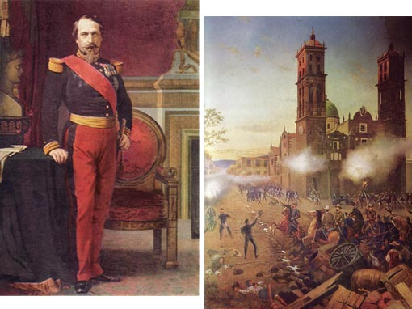
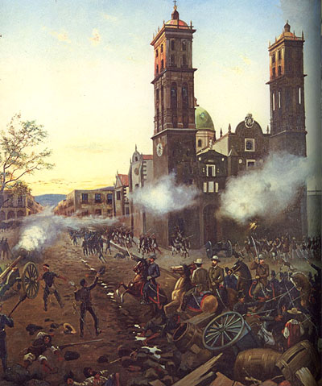
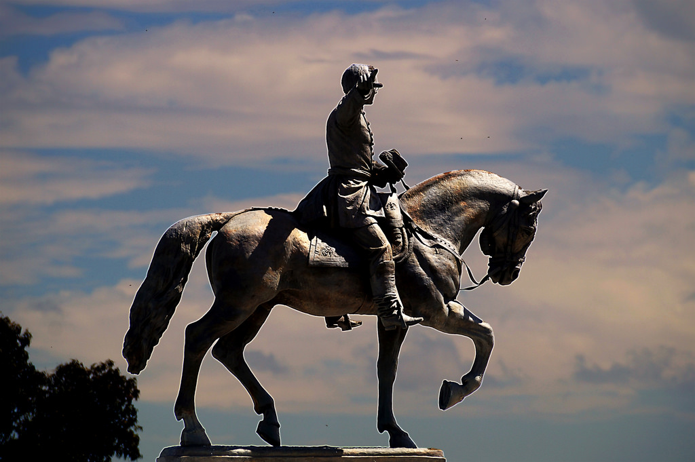
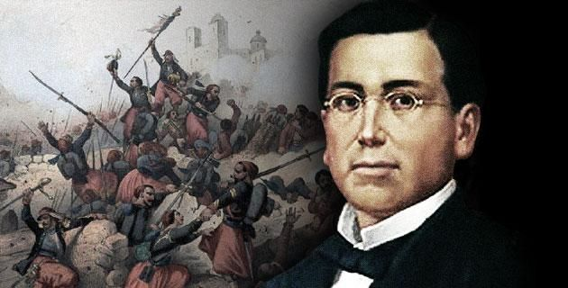
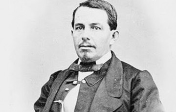
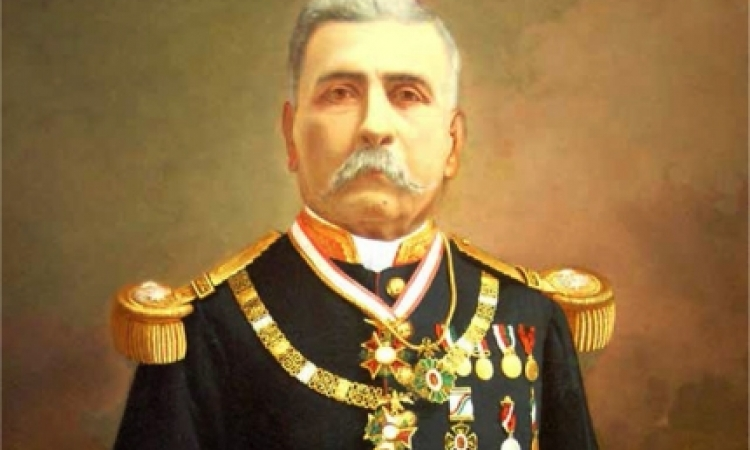
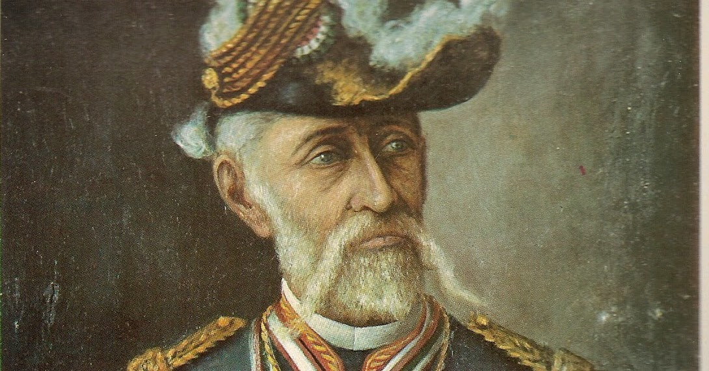

Atlixco tiene una larga historia de contribuciones a la construcción de éste país y este Estado de Puebla.

Su participación en la causa de la Independencia, -donde destacan José Luis Rodríguez de Alconedo y Francisco Pablo Vázquez- le otorgaron, de parte del General Nicolás Bravo en 1843 la denominación de “Noble y Leal Ciudad de Atlixco”.
El esfuerzo de construcción de nuestro país, pasa por una serie de invasiones. Por ello habrá que recordar también, la defensa que hizo Atlixco en contra de los españoles que intentaban reconquistar a México en 1825; y la intervención que tuvo en 1914 durante la invasión estadounidense en el gobierno de Victoriano Huerta.
La llegada de la industria textil en Atlixco implicó para la región un cambio favorecedor en el estilo de vida; sin embargo, ésta época de desarrollo textil en el valle de Atlixco coincide con el movimiento revolucionario. La influencia del movimiento de Emiliano Zapata en pro de de la tierra, sumó a un gran número de trabajadores inconformes y líderes de esta lucha revolucionaria de la región como Fortino Ayaquica y Domingo y Cirilo Arenas, que trataron de hacer insurrección en las fábricas textiles, hechos violentos que sucedieron entre 1911 y 1917 en la fábrica textil de Metepec. Incluso, el historiador Jeffrey Bortz, sostiene que los trabajadores de la industria textil del corredor fabril México, Tlaxcala y Atlixco, Puebla, aportaron las principales reivindicaciones laborales que quedaron plasmadas en la Constitución de 1917.
Una distinción que enorgullece a los atliscenses fue la Declaratoria mediante la cual Atlixco fue nombrada por Decreto del Congreso del Estado en el año de 1998 “Heroica Ciudad de Atlixco” por la defensa que dieron en contra del ejército norteamericano en 1848, y el reconocimiento al batallón “Libres de Atlixco” comandado por el general Joaquín Rea, que enfrentaron en un ataque desigual, contra de una población indefensa demostrando el gran valor de los atlisquenses.
Nuevamente, un 4 de mayo de 1862, Atlixco, enfrenta una batalla en contra de conservadores que pretendían sumarse al Ejército Francés. Hecho decisivo en la epopeya del 5 de Mayo, que hoy es parte de la historia nacional.
El 5 de mayo es una fecha muy importante para todos los mexicanos. El cinco de Mayo se conmemora el día de la Batalla de Puebla, en la cual el ejército mexicano venció al ejército francés. Cada ano se celebra en México, con orgullo y pasión, esta victoria con grandes festejos.
En 1857, ocurrió la Guerra de Reforma : un conflicto armado donde los liberales afrontaron los conservadores para impedir que la nueva constitución restituya a los militares y a la Iglesia los privilegios que habían perdido con las Leyes de Reforma. Benito Juárez, gobernador de Oaxaca al momento del conflicto, representaba a los liberales y Ignacio Comonfort, presidente de la República, representaba a los conservadores. Despues de 3 años, a principio del año 1961, los liberales ganaron la guerra y el Presidente Benito Juárez instauró su gobierno en la Ciudad de México.
Pero despues de 3 años de conflicto, México está financieramente en ruinas y tiene deudas enormes que los conservadores contrataron con banqueros europeos para pagar la guerra. La deuda era de 80 millones de pesos; 69 millones para los ingleses, 9 millones para los españoles y 2 millones para Francia.
El presidente Benito Juárez declaró el 17 de julio de 1861, una moratoria de dos años en el pago de deudas a prestamistas extranjeros. Posteriormente, en octubre de ese mismo año, Francia, Inglaterra y España acordaron intervenir la República para exigir el pago de sus deudas.
En octubre de 1861, Francia, Inglaterra y España firmaron la Convención de Londres, en la cual se comprometieron a enviar contingentes militares a México. La Alianza Tripartita amenazó al presidente Benito Juárez con invadir el país si no se saldaba por completo las deudas con los tres países europeos.
Juárez responde con un exhorto para lograr un arreglo amistoso, en un principio la Alianza Tripartita aceptó el llamado al diálogo. Sus representantes se reunieron con Manuel Doblado, ministro de Relaciones Exteriores, quien consiguió que Juan Prim, representante español, y Lord John Russell por Inglaterra se retiraran; lograron negociar por la vía diplomática los términos y condiciones en los que se pagaría posteriormente la deuda. Es entonces cuando Juárez creo al Ejército de Oriente y designó al general Ignacio Zaragoza al frente de este.
El 5 de marzo, cuando aún se realizaban las negociaciones, llegó a Veracruz un contingente militar francés bajo el mando de Charles Ferdinand Latrille, conde de Lorencez. A finales de abril, Lorencez se puso en marcha, junto con sus efectivos, hacia Puebla, con el fin de avanzar para conquistar la Ciudad de México.
Debido principalmente a la cantidad de deudas, , Inglaterra y España subscribieron el Convenio de Londres, por el cual se comprometieron a intervenir por el uso de la fuerza en México para reclamar sus derechos como acreedores, mientras tanto el Presidente Benito Juárez declaró suspendidos los compromisos adquiridos y aplazó pagar la deuda a las naciones europeas. Tras desembarcar en Veracruz, España e Inglaterra aceptaron las explicaciones mexicanas dadas en los Tratados de La Soledad, los cuales tenían como fundamento, el respeto a la soberanía territorial, el reconocimiento de las naciones acreedoras al Estado Mexicano, la entrada al terreno de las negociaciones para llegar a acuerdos en común, que beneficiaría tanto a la República Mexicana, como a los intereses de las potencias invasoras, y por último, se permitiría que los soldados de los tres países se establecieran en las ciudades mexicanas de Orizaba, Córdoba y Tehuacán durante las negociaciones, debido a lo malsano del clima imperante en el puerto de Veracruz; en caso contrario, los soldados de las tres potencias se retirarían a las costas de Veracruz para así comenzar las hostilidades.
Solo los representantes de España e Inglaterra comprendieron la situación que guardaba la República Mexicana, al analizar los argumentos, decidieron negociar de manera independiente ante la autoridad mexicana, privilegiando a la nación mexicana con un triunfo diplomático, que dadas las difíciles circunstancias, permitió encauzar esfuerzos posteriormente hacia la intervención del Imperio Francés; pero ellos tenían otros planes. El primero, el pronto pago con intereses de la deuda, esto incluía un cobro exagerado por parte de la "Casa Jecker", debido a destrozos causados durante la Guerra de Reforma, dos, tener control total y absoluto de las aduanas, así como intervención directa en la política económica del país, y tres, el más común, imponer un gobierno monárquico en México, con miras a contrarrestar el creciente poderío de los Estados Unidos. Sin embargo, un mal entendido por parte de los representantes de las tres potencias, aunado a los ambiciosos planes de la representación francesa de sus propios tratados, inicio pronto las hostilidades con el ejército de Napoleón III, dando por iniciada la Segunda Intervención Francesa en México.
Al frente del ejército francés venía Charles Ferdinand Latrille, Conde de Lorencez, quien partió de Veracruz en dirección a la ciudad de México, pasando por Tehuacán y avanzado hacia el oeste. Para contrarrestar este avance, el gobierno mexicano de Benito Juárez creó una unidad bélica conocida como Ejército de Oriente, primeramente al mando del General José López Uraga y posteriormente del general Ignacio Zaragoza, hasta entonces Ministro de Guerra y Marina y veterano de la guerra con los Estados Unidos y de la Guerra de Reforma. El 16 de abril de 1862, el General Juan Prim, Jefe de la Fuerzas Españolas escribía a Ignacio Zaragoza, que no habiéndose puesto de acuerdo los representantes de los tres países, solo los españoles e ingleses aceptarían los términos que Benito Juárez propusiese en los Tratados de la Soledad, y se reembarcarían de regreso a casa. También puso en alerta a Zaragoza que los franceses no aceptaron esto, pues vieron fallas en este decreto, y que exigían pronto el pago, pues se veían amenazados por los prusianos y no tenían con que solventar una guerra, por lo cual comenzarían una invasión hacia la capital de la República, supuestamente para poder obtener el pago de la deuda.

Después del fracaso de los Tratados de La Soledad y el retiro de las flotas españolas e inglesas tras la escaramuza entre galos e hispanos en Córdoba, el ejército francés al mando del general Charles Ferdinand Latrille, Conde de Lorencez, sale de Orizaba hacia el oeste. Había llegado envuelto en laureles de victoria, colgando de sus blasones los nombres de sus triunfos obtenidos en Solferino, Magenta, Argelia y Sebastopol, reflejaba esa actitud la insolencia y subestimación de Lorencez, al enviar al Mariscal de Francia Lannes, el siguiente mensaje: “Somos tan superiores a los mexicanos en organización, disciplina, raza, moral y refinamiento de sensibilidades, que le ruego anunciarle a Su Majestad Imperial, Napoleón III, que a partir de este momento y al mando de nuestros 6.000 valientes soldados, ya soy dueño de México”. Era un sueño absurdo el de Lorencez querer conquistar un país cinco veces más poblado que Francia, pero sostenida por la guerra civil que vivía México, y la no amenaza de Estados Unidos, pues también se encontraba en guerra civil.
En la Zona Histórica de los Fuertes hay varias atracciones que vale la pena visitar, la verdad es que para visitar todas si necesitas un día entero, o hasta más. Y es que este lugar cuenta con un valor histórico, patriótico y cultural de gran importancia.
Justo antes de llegar a los Fuertes, uno pasa por este monumento, y muchas veces pasa casi desapercibido, pero no debe ser así ya que es de gran importancia. El Monumento a la Victoria (5 de mayo) fue hecha por el escultor y pintor mexicano Ernesto Tamariz.
Recibe su nombre debido a que aquí el ejercito mexicano libró una poderosa batalla contra el ejercito francés, durante la Segunda Intervención Francesa el 5 de mayo de 1862. Dicha batalla fue liderada por el General Ignacio Zaragoza, que estaba a cargo del Ejercito de Oriente. La batalla fue ganada por el ejercito mexicano, lo que llenó de orgullo al país, y sobre todo a la gente de Puebla.
Descripción enviada por el equipo del proyecto. En Puebla, ciudad de leyendas e inmensa riqueza cultural, encontramos un caleidoscopio de edificaciones, texturas e interacciones que se entremezclan para regalarnos un mosaico de la actual cultura poblana. Dentro de éste marco, al noreste del zócalo se encuentra un complejo que agrupa diversos espacios para la cultura, educación y recreación; sitio que alberga al “Monumento Emblemático” del 150 Aniversario de la Batalla de Puebla.
A través de la historia, monumentos se han erigido para recordar a las nuevas generaciones de los sucesos pasados que definen los tiempos actuales. Tipificados comúnmente como objetos escultóricos, nuestra propuesta busca fomentar las relaciones entre la continuidad del espacio público y potencializar el sitio, mediante la creación de espacios plurales de convivencia, así como el aprovechamiento de las vistas que otorga el emplazamiento.
Formalmente, la idea de monumento es abstraída para diseñar un espacio que va de lo abierto a lo cerrado, de la escultura vertical a la horizontal; impulsando la convivencia a través de los intersticios que surgen de la elevación premeditada de niveles.

Puebla fue un punto clave para la historia del país, por lo que este museo interactivo revive de forma didáctica la batalla del 5 de Mayo de 1862 en la zona de Los Fuertes, el mismo escenario donde se desarrollaron estos hechos.
El interactivo narra las acciones militares y contiene las biografías de héroes nacionales como Ignacio Zaragoza, a través de pantallas táctiles, proyecciones en 3-D y contenidos interactivos descargables en dispositivos.
Este espacio está dotado de tres salas que detallan la riqueza histórica de Puebla, que te transportan a los lugares donde la batalla se llevó a cabo.

El Museo Regional de Puebla alberga una colección de extraordinario valor cultural y atractivo estético, además de formar parte del Centro Cívico 5 de Mayo Los Fuertes, integrado por el Museo de la No Intervención Fuerte de Loreto, el Monumento Histórico Fuerte de Guadalupe, el Museo Interactivo Imagina, el Planetario, el Auditorio de la Reforma y el Centro Expositor de Puebla. Esta zona es emblemática de la historia, la cultura y la vida social de la ciudad de Puebla, lo que le otorga una privilegiada ubicación al Museo Regional, teniendo la oportunidad de ser un espacio cultural central de la Ciudad y el Estado.
En el año 1962 como parte de la conmemoración del centenario de la batalla del 5 de mayo de 1862, se crea un proyecto denominado Unidad Cívica 5 de Mayo, el cual intentó ser de manera sucinta, un proyecto urbano arquitectónico que convierte una zona monumental e histórica en una especie de parque-monumento para el disfrute de la población.
Los proyectos arquitectónicos y urbanos se le encomendaron al Arq. Abraham Zabludovsky quien, junto con el Arq. Luis G. Rivadeneyra como coordinador y los arquitectos colaboradores Jorge Ferraez, Pedro Flores, R. Torres Garza y Arturo Ortega, estuvieron a cargo de los proyectos del Auditorio de la Reforma, de la fuente dedicada al Gral. Ignacio Zaragoza, de la planeación urbana de la zona, de la restauración del Fuerte de Loreto, de la consolidación del Fuerte de Guadalupe, así como de la creación de la escuela de artesanías del estado, que más tarde se convertiría en el Museo Regional y en el centro INAH-Puebla.La creación del Museo Regional se da catorce años más tarde de que se creara la Unidad Cívica 5 de Mayo y de manera paulatina. En primera instancia, a partir de 1974 la escuela de artesanías del estado le otorga al INAH un espacio en este inmueble para albergar las oficinas regionales y el Museo Regional de Puebla adoptando su imagen actual tras la ejecución de un proyecto de remodelación en el mismo año.
Encabezó la defensa mexicana frente a la ofensiva francesa, mejor conocido como el Conde de Lorencez. Nacido en el entonces departamento mexicano de Texas, Enlistado como soldado en las Guardias Nacionales del estado, su carrera ascendió durante la Guerra de Reforma hasta convertirse en General del Ejército Mexicano y, con el triunfo de los liberales, en Ministro de Guerra del Presidente Benito Juárez. Atrincherado en Puebla para hacerle frente al ejército francés, siempre supo dar ímpetu y valor a sus hombres. México era una incipiente realidad como nación soberana, y lo recordó a sus tropas el 4 de mayo de 1862, en la víspera de la batalla, cuando reuniéndolos en la Plaza de San José les dijo: Soldados, os habéis portado como héroes combatiendo por la Reforma. Vuestros esfuerzos han sido siempre coronados por el éxito. Hoy vais a pelear por un objeto sagrado, vais a pelear por la Patria y yo os prometo que en la presente jornada conquistaréis un día de gloria. Vuestros enemigos son los primeros soldados del mundo, pero vosotros sois los primeros hijos de México. Soldados, leo en vuestras frentes la victoria y la fe. ¡Viva la independencia nacional! ¡Viva la patria!"
Es considerado por algunos historiadores como el verdadero héroe de la Batalla de Puebla. Durante la Guerra de Reforma participó del lado de los conservadores. Sin embargo, cuando la nación se vio invadida, se acogió a la amnistía que el Presidente Benito Juárez extendió a todos sus antiguos enemigos, incorporándose así a las filas republicanas.El 5 de Mayo estuvo al mando de las fuerzas que defendían el Cerro de Guadalupe, recibiendo el peso del principal asalto francés.En el primer ataque, cuando los zuavos confiados ascendían la pendiente, los mexicanos aguardaron hasta que el General Negrete levantó su gorra como señal para hacer fuego.Las nutridas descargas sorprendieron a los franceses, quienes después de hacer alto y responder por algunos minutos, retrocedieron con graves pérdidas.
Militar valiente de origen oaxaqueño, Díaz llenó su nombre de gloria con una destacada participación durante el 5 de Mayo. Colocado con su Brigada de Oaxaca en la Ladrillera de Azcarate, uno de los últimos edificios de la ciudad, rechazó tenazmente al final de la batalla un ataque hecho por la Infantería de Marina francesa.El 5 de mayo, el político oaxaqueño y otros militares intervinieron en la Batalla de Puebla, Díaz defendió el ala izquierda de la ciudad, y rebatió en dos ocasiones el ataque francés. En un principio, retirándose en buen orden, los marinos franceses pronto se vieron huyendo en pánico perseguidos por los Lanceros de Oaxaca. Tan precipitada fue su huida, que muchos galos tuvieron que arrojar sus mochilas para poder correr más aprisa de la caballería mexicana. Jesús González Ortega y Porfirio Díaz se dieron a la tarea de perseguirlos, hasta que Zaragoza se los impidió.
Político, ingeniero, Ministro de Guerra y Marina; General de división. Sirvió de 1849 hasta el 1900 con lealtad en el Ejército mexicano, Felipe Berriozábal participó en la Primera intervención estadounidense en México, la Guerra de Reforma y la Segunda Intervención Francesa en México y formó parte de los gobiernos de Benito Juárez y Porfirio Díaz. Nacido en Zacatecas, Zacatecas, en 1827, realizó como ingeniero el proyecto hidráulico de canalización del Río Lerma. Durante la Revolución de Ayutla participó con los liberales bajo las órdenes del general Plutarco González. Durante la Guerra de Reforma, el general Santos Degollado lo nombró coronel de caballería auxiliar y más tarde ascendió a general de brigada. Las crónicas históricas de la Batalla de Puebla narran que el general Zaragoza hizo avanzar al general Felipe Berriozábal a paso veloz entre las rocas y situándolo entre la hondonada que divide Loreto y Guadalupe. Mientras que el general Antonio Alvarez, con su brigada protegía la izquierda de los reductos. Los franceses continuaron su avance, colocando sus baterías frente a Guadalupe y devuelviendo el fuego mexicano que nacía de aquella posición. Los "zuavos" (regimiento de infantería francesa) ascienden hacia el Fuerte de Guadalupe, perdiéndose de la vista de los fusileros mexicanos y de repente, aparecieron frente al Fuerte de Guadalupe, rompiendo fuego de fusil sobre la columna, que paró en seco ante el fuego mexicano. En ese instante, el general Felipe Berriozábal dio la bienvenida con bayoneta a los zuavos, quienes se retiraron hasta ponerse fuera de tiro.


 2
2